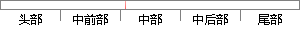

在互联网的演化进程中，网页制作是Web1.
片段位置图

相似结果|
相似片段 1：的时代特征。在互联网的演化进程中，网页制作是Web1．0时代的产物，那时网站的主要内容都是静态的，用户使用网站的行为以浏览为主，当时网页制作的主要技术是网页制作三剑客——DreamWeaver
相似片段 2：。在互联网的演化进程中，网页制作是Web1．0时代的产物，那时网站的主要内容都是静态的，用户使用网站的行为也以浏览为主。就在过去的两年，互联网出现了一股追捧JavaScript应用的浪潮，很多人开始
相似片段 3：简单的格式文档，并没有复杂的技术组合应用其中，在互联网的演化进程中，网页制作是Webl．0时代的产物，用户使用网站的行为以浏览为主。
|
※ 片段修改建议 ※
近似词参考：- 演化：演变
- 进程：历程 过程
- 制作：建造
系统自动生成语句：在互联网的演变历程中，网页建造是Web1.
注：本片段修改建议为系统自动生成，仅供参考。